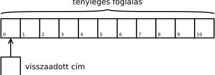
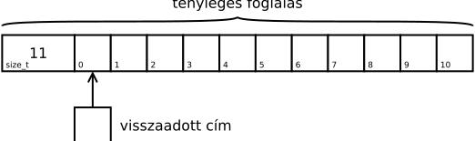

Az operator delete(void *p, size_t s) függvény
Czirkos Zoltán · 2020.03.04.
A felszabadított memóriaterületek méretét néha ismerjük. Miért jó ez? Hogy jelenik meg a programban? Hogyan következtet erre a fordító?
A dinamikus memóriakezelés mögötti adminisztráció elég összetett. A malloc–free, vagy épp
operator new–operator delete függvénypárosnak egy lineáris, összefüggő memóriaterülettel kell
gazdálkodnia. Ebből a memóriaterületből kell szeleteket adniuk a hívónak, és ugyanitt kell végezniük az adminisztrációt is: a
foglalt és szabad területek nyilvántartását.
Ezek hatékonysága kritikus a program futási sebességének szempontjából, hiszen gyakori műveletről van szó. A feladat megoldására több allokátor algoritmus is létezik: slice allocator, slab allocator, buddy blocks stb. kulcsszavakra keresve sok információt lehet ezekről találni. Különösen érdekes az az eset, amikor egyforma méretű blokkokból kell nagyon sokat foglalni. Ilyen lehet sok egyforma típusú objektum létrehozása. Vagy egy terminál emulátor (konzol ablak), amelyben akár több ezer sort is görgethetünk visszafelé. Ebben az egyes sorok mérete az ablak szélességétől függ, de amúgy mindegyik egyforma..
Egyes alkalmazásoknál gyakran felszabadításkor is ismerjük a lefoglalt memóriaterület méretét. Ez pedig az allokátor
számára hasznos információ lehet, mert előfordulhat, hogy egyszerűsítésre vagy optimalizációra ad lehetőséget. Éppen ezért
az operator delete(void *) függvénynek van egy olyan overloadja is, amelyik átveszi a méretet is
paraméterként: operator delete(void *, size_t).
Ha kellően új a fordítónk, akkor ezt használja is. Mivel implementációfüggő dolgokról van szó, fontos információnak számít, hogy az alábbi kimeneteket GCC 7.4-es fordítóval fordított programok adták.
Tekintsük a következő programocskát:
#include <iostream>
void * operator new (size_t s) {
void *p = malloc(s);
std::cout << "Allocated " << s << " bytes at " << p << std::endl;
return p;
}
void operator delete (void *p) noexcept {
std::cout << "Freed block at " << p << std::endl;
free(p);
}
void operator delete (void *p, size_t s) noexcept { // cím + méret
std::cout << "Freed " << s << " bytes at " << p << std::endl;
free(p);
}
int main() {
void *p = operator new(sizeof(int)); // 1
operator delete(p);
int *pi = new int; // 2
delete pi;
}Allocated 4 bytes at 0x55708820ae70 1 Freed block at 0x55708820ae70 Allocated 4 bytes at 0x55708820ae70 2 Freed 4 bytes at 0x55708820ae70
Az első esetben közvetlenül hívjuk a függvényeket; a foglaláskor paraméterként szerepel a méret is, a felszabadításkor nem. Láthatóan viszont a második esetben, amikor a fordító hívta a függvényeket, akkor a felszabadításkor megadta a terület méretét.
Itt hamar felmerül egy kérdés: honnan tudja, hogy mekkora a lefoglalt terület mérete? Mindig azt szoktuk mondani, hogy egy pointerről sosem lehet tudni, hogy mekkora területre mutat, hiszen csak egy memóriaterület elejét jelöli meg, végét nem. Most valahogyan a fordító mégis meg tudta adni a felszabadító függvénynek is, hogy 4 bájt a foglalás mérete.
A válasz nagyon egyszerű: biztos lehetett benne, a pointer egyetlen egy darab int objektumra mutat, amelynek 4 bájt
a mérete. A típus biztosan int, ez kiderül a pointer típusából. Azt is lehet tudni, hogy nem tömbről van szó, hiszen
akkor a programozónak a delete[] operátort kellett volna használnia, nem a sima delete-et.
Foglaljunk tömböket most! A következő forráskód a new és a delete helyett a beépített
new[] és a delete[] operátorokat írja felül. Aztán pedig foglal és felszabadít tömböket,
méghozzá 1) beépített típusú, 2) objektum és 3) destruktorral rendelkező objektum típusú elemekből:
#include <iostream>
void * operator new[] (size_t s) {
void *p = malloc(s);
std::cout << "Allocated " << s << " bytes at " << p << std::endl;
return p;
}
void operator delete[] (void *p) noexcept {
std::cout << "Freed block at " << p << std::endl;
free(p);
}
void operator delete[] (void *p, size_t s) noexcept {
std::cout << "Freed " << s << " bytes at " << p << std::endl;
free(p);
}
class A { // nincs destruktor (triviális)
public:
int i;
};
class B { // van destruktor
public:
int i;
~B() { std::cout << "."; }
};
int main() {
int *pi = new int[11]; // 1
delete[] pi;
A *pa = new A[11]; // 2
delete[] pa;
B *pb = new B[11]; // 3
delete[] pb;
}Allocated 44 bytes at 0x55a096b4ae70 1 Freed block at 0x55a096b4ae70 Allocated 44 bytes at 0x55a096b4ae70 2 Freed block at 0x55a096b4ae70 Allocated 52 bytes at 0x55a096b4b2b0 3 ..........Freed 52 bytes at 0x55a096b4b2b0
Mi történik az egyes esetekben?
- Az első esetben 11
int-et foglalunk le. A foglaláskor ugyan ismert a méret, a felszabadításkor viszont nem, mert nem tudni, hogy a pointer „mögött” mekkora tömb van. - Ugyanez a helyzet a második esetben, az
Atípusú objektumok foglalásakor. A lefoglalt terület amúgy ugyanakkora, mint az előbb, mert az objektumban csak egyintadattag van. - Ettől eltér viszont a harmadik eset, a
Bobjektumok tömbje. A lefoglalt terület mérete nagyobb valamiért (44 helyett 52 bájt), és a felszabadítás is megkapja a foglalt terület méretét.
A különbséget a destruktor megjelenése okozza. Mivel a B osztálynak van destruktora,
a fordítónak fel kell készülnie a tömb felszabadítására. A foglaláskor, vagyis a new B[11] végrehajtásakort
feljegyzi a tömb méretét a tömb elé. Ezért lett nagyobb a memóriaterület: 44 bájt kell a 11 darab
B objektumnak, és még 8 bájt egy size_t-nek, ahova az elemszámot teszi. Ezt pedig felszabadításkor
kiolvassa, hogy meg tudja hívni a 11 destruktort. Ha pedig a tömb elemszáma ismert, abból a tömb mérete könnyedén
kiszámítható újra, és akkor már hívható akár az operator delete[](void *, size_t) függvény is.
Vagyis ha nincs destruktora az osztálynak, akkor a lefoglalt területen csak az objektumok vannak:
Ha van destruktor, akkor pedig egy kicsit nagyobb memóriaterületet kell foglalni, mert fel kell jegyezni az objektumok számát is. A hívás eredménye természetesen ilyenkor is a tömb elején lévő objektumra mutat:
Leszármazással közben új adattagokat adhatunk hozzá az osztályhoz, és emiatt a különféle leszármazottak objektumai
eltérő méretűek lehetnek. Ezt a foglalás közben könnyű figyelembe venni, hiszen ott a new kifejezésnél mindig
pontosan ismert az objektum típusa:
Shape *s1 = new Rectangle(10, 20); // sizeof(Rectangle)
Shape *s2 = new Circle(30); // sizeof(Circle)Mi a helyzet a felszabadításnál? Mint az kiderül, ott is könnyedén meghatározható a foglalt objektum mérete – annak ellenére, hogy a rá mutató pointerből statikusan csak az ősosztály ismert. Egy kicsit hosszúra sikerült, de amúgy triviális tesztprogram a következő:
#include <iostream>
void * operator new (size_t s) {
void *p = malloc(s);
std::cout << "Allocated " << s << " bytes at " << p << std::endl;
return p;
}
void operator delete (void *p, size_t s) noexcept {
std::cout << "Freed " << s << " bytes at " << p << std::endl;
free(p);
}
void operator delete (void *p) noexcept {
std::cout << "Freed block at " << p << std::endl;
free(p);
}
class Shape {
public:
virtual ~Shape() = default;
};
class Rectangle : public Shape {
public:
double a, b;
Rectangle(double a, double b): a(a), b(b) {}
~Rectangle() { std::cout << "Rectangle dtor" << std::endl; }
};
class Circle : public Shape {
public:
double r;
Circle(double r): r(r) {}
~Circle() { std::cout << "Circle dtor" << std::endl; }
};
Shape * create_shape() {
std::cout << "(R)ectangle or (C)ircle? ";
char c;
std::cin >> c;
if (c == 'R')
return new Rectangle(10, 20);
else
return new Circle(30);
}
int main() {
Shape *p;
p = create_shape();
delete p;
p = create_shape();
delete p;
}(R)ectangle or (C)ircle? R 1 Allocated 24 bytes at 0x55a299fa8690 Rectangle dtor Freed 24 bytes at 0x55a299fa8690 (R)ectangle or (C)ircle? C 2 Allocated 16 bytes at 0x55a299fa8690 Circle dtor Freed 16 bytes at 0x55a299fa8690
A program lényege, hogy csak futási időben dől el az objektumok típusa: a felhasználó adja meg, hogy épp kört vagy téglalapot
szeretne létrehozni. Így lehetetlen, hogy a fordító ismerje a felszabadítandó terület méretét a delete p-knél. Ennek
ellenére látszik, hogy mégis kideríti valahonnan ezt az információt.
Vajon honnan? A kérdésre egyszerű a válasz: ahonnan minden más információt kiolvas futási időben az objektumról, vagyis (közvetve) a virtuális függvénytáblából. Az objektum virtuális függvénytábla pointere egy olyan globális adatszerkezetre mutat rá, amelyik az adott osztály tulajdonságait írja le. Az egyes virtuális függvények címe mellett ebben akár az objektum mérete is feljegyezhető.
Hogy ez miként történik, az persze megint implementációs kérdés. Valójában a felszabadítás általában összefügg az objektum destruktorának futtatásával, ezért érdemes a destruktorba beépíteni ezt az információt. Viszont mivel nem minden objektum dinamikusan foglalt, ez általánosságban nem tehető ez meg. Emiatt a fordító ezekhez az objektumokhoz két destruktort generál. Ezek a következőek:
- Base destructor vagy complete object destructor: ezt a destruktort hívja akkor, amikor nincs szükség
dinamikus memória felszabadítására. Például amikor explicit destruktorhívás van a kódban:
p->~T(), vagy amikor veremben lévő objektumot kell megszüntetni. - Deleting destructor: ezt pedig akkor hívja, amikor dinamikusan volt foglalva az objektum, tehát egy
delete pkifejezés hatására. Ez pont ugyanúgy működik, mint az előző, hívja az adattagok destruktorait, csak végül csinál egyoperator delete(this, sizeof(típus))függvényhívást is. Mivel a virtuális destruktorból osztályonként külön példány létezik, a megadott méret mindig más lehet.
Mindez szépen látszik a fordító által generált kódból:
Rectangle::~Rectangle() [deleting destructor]:
sub rsp, 24
mov QWORD PTR [rsp+8], rdi
call Rectangle::~Rectangle() [complete object destructor]
mov rdi, QWORD PTR [rsp+8]
mov esi, 24 24 bájt
add rsp, 24
jmp operator delete(void*, unsigned long)
Circle::~Circle() [deleting destructor]:
sub rsp, 24
mov QWORD PTR [rsp+8], rdi
call Circle::~Circle() [complete object destructor]
mov rdi, QWORD PTR [rsp+8]
mov esi, 16 16 bájt
add rsp, 24
jmp operator delete(void*, unsigned long)